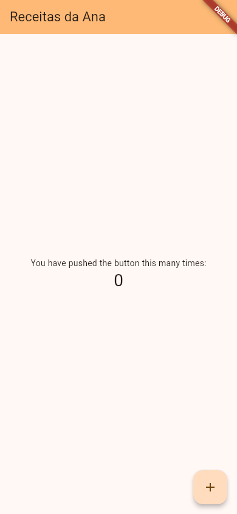
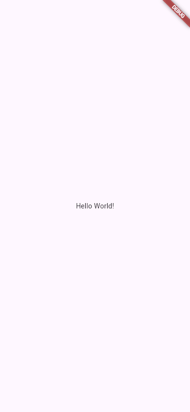

Criando um Projeto (flutter create)
Um app Flutter não é um arquivo só: é uma pasta de projeto com o seu código Dart, a lista de pacotes que ele usa e uma subpasta para cada plataforma (Android, iOS, web...), cheia de arquivos de configuração que ninguém escreve à mão. Quem monta tudo isso é o comando flutter create. Com ele, em alguns segundos, a Ana tem um app completo, que já roda, para começar a mexer.
- A criar um projeto com
flutter createe a ler o que ele responde. - As regras do nome do projeto, e o erro quando o nome não vale.
- O app de exemplo que vem pronto: o contador.
- O
--empty, para começar com um app mínimo. - O
--orge o--platforms. - A criar o mesmo projeto pelo VS Code e pelo Android Studio.
- O que acontece ao rodar
flutter createnuma pasta que já existe.
Todos os comandos desta aula foram rodados na máquina da Ana (Flutter 3.47.7), na pasta pessoal dela, /home/ana. O flutter create precisa de internet: no fim, ele baixa os pacotes do projeto.
A ideia: a casa pré-moldada
Quem constrói uma casa pré-moldada não começa cortando tijolo: recebe as paredes, o telhado e o encanamento já prontos e encaixados, e uma casa que já dá para morar. Depois, pinta e muda os móveis do jeito que quiser.
O flutter create entrega a casa pré-moldada: todas as pastas e configurações de cada plataforma, e um app de exemplo funcionando. O seu trabalho, nas próximas aulas, é "mudar os móveis": quase tudo o que você vai escrever fica num arquivo só, o lib/main.dart.
1. O primeiro projeto
A Ana quer um app de receitas. No terminal, na pasta pessoal:
$ flutter create receitas_da_ana Creating project receitas_da_ana... Resolving dependencies in `receitas_da_ana`... Downloading packages... Got dependencies in `receitas_da_ana`. Wrote 131 files. All done! You can find general documentation for Flutter at: https://docs.flutter.dev/ Detailed API documentation is available at: https://api.flutter.dev/ If you prefer video documentation, consider: https://www.youtube.com/c/flutterdev In order to run your application, type: $ cd receitas_da_ana $ flutter run Your application code is in receitas_da_ana/lib/main.dart.
- flutter create receitas_da_ana
- "Crie um projeto Flutter na pasta
receitas_da_ana". O nome da pasta vira também o nome do projeto (o nome do pacote Dart). - Creating project receitas_da_ana...
- "Criando o projeto": a pasta e os arquivos.
- Resolving dependencies ... Downloading packages... Got dependencies
- "Resolvendo dependências, baixando pacotes, dependências obtidas": o comando roda sozinho um
flutter pub get, que baixa os pacotes que o projeto usa (os da lista dopubspec.yaml: aula As Pastas de um Projeto). - Wrote 131 files.
- "Escrevi 131 arquivos". A maioria é configuração das seis plataformas.
- All done!
- "Tudo pronto!", seguido de três endereços: a documentação geral, a documentação de cada classe (a API) e o canal de vídeos.
- In order to run your application, type: ...
- "Para rodar o seu app, digite": entrar na pasta (
cd) eflutter run(aula Rodando o App). - Your application code is in receitas_da_ana/lib/main.dart.
- "O código do seu app está em
lib/main.dart". É ali que você vai trabalhar.
2. O nome do projeto
O nome do projeto é um nome de pacote Dart, e tem regras. Veja o que acontece quando a Ana tenta um nome com letra maiúscula e hífen:
$ flutter create Receitas-Ana "Receitas-Ana" is not a valid Dart package name. Try "receitas_ana" instead. The name should consist of lowercase words separated by underscores, "like_this". Use only basic Latin letters and Arabic digits: [a-z0-9_], and ensure the name is a valid Dart identifier (i.e. it does not start with a digit and is not a reserved word). See https://dart.dev/tools/pub/pubspec#name for more information.
- "Receitas-Ana" is not a valid Dart package name. Try "receitas_ana" instead.
- "Não é um nome de pacote Dart válido. Experimente
receitas_ana." O Flutter até sugere um nome que vale. - lowercase words separated by underscores, "like_this"
- "Palavras em minúsculas separadas por sublinhado (
_), assim:like_this". Esse estilo se chama snake_case ("estilo cobra"). - Use only basic Latin letters and Arabic digits: [a-z0-9_]
- "Só letras latinas básicas e algarismos": de
aaz, de0a9e o_. Nada de acento, cedilha, espaço ou hífen. - a valid Dart identifier (... does not start with a digit and is not a reserved word)
- "Um identificador Dart válido: não começa com número e não é uma palavra reservada" (como
classouvoid).
Nenhuma pasta foi criada: o comando parou antes. Com um número na frente, a sugestão é curiosa:
$ flutter create 2receitas "2receitas" is not a valid Dart package name. Try "_2receitas" instead. « ... o mesmo texto de regras de antes
| Nome | Vale? |
|---|---|
receitas_da_ana | Sim |
lojinha | Sim |
app2 | Sim (o número pode vir depois) |
Receitas-Ana | Não: maiúscula e hífen |
2receitas | Não: começa com número |
pão_de_queijo | Não: acento e til |
class | Não: palavra reservada do Dart |
O nome do projeto é interno. O nome que aparece embaixo do ícone no celular ("Receitas da Ana", com espaço e maiúscula) é outra coisa, configurada em cada plataforma; ele aparece nas aulas de build (Gerando o APK e o App Bundle).
3. O app que vem de presente: o contador
O projeto novo já tem um app. O lib/main.dart tem 122 linhas, muitas delas comentários em inglês explicando o código. Sem os comentários, ele é este:
import 'package:flutter/material.dart';
void main() {
runApp(const MyApp());
}
class MyApp extends StatelessWidget {
const MyApp({super.key});
@override
Widget build(BuildContext context) {
return MaterialApp(
title: 'Flutter Demo',
theme: ThemeData(
colorScheme: .fromSeed(seedColor: Colors.deepPurple),
),
home: const MyHomePage(title: 'Flutter Demo Home Page'),
);
}
}
class MyHomePage extends StatefulWidget {
const MyHomePage({super.key, required this.title});
final String title;
@override
State<MyHomePage> createState() => _MyHomePageState();
}
class _MyHomePageState extends State<MyHomePage> {
int _counter = 0;
void _incrementCounter() {
setState(() {
_counter++;
});
}
@override
Widget build(BuildContext context) {
return Scaffold(
appBar: AppBar(
backgroundColor: Theme.of(context).colorScheme.inversePrimary,
title: Text(widget.title),
),
body: Center(
child: Column(
mainAxisAlignment: .center,
children: [
const Text('You have pushed the button this many times:'),
Text(
'$_counter',
style: Theme.of(context).textTheme.headlineMedium,
),
],
),
),
floatingActionButton: FloatingActionButton(
onPressed: _incrementCounter,
tooltip: 'Increment',
child: const Icon(Icons.add),
),
);
}
}
Rodando, ele mostra um contador: um número no meio da tela e um botão redondo com + no canto. Cada toque no botão soma 1.

flutter create, como abre.
Por enquanto, reconheça só as peças grandes. Cada uma tem aula própria:
- MyApp
- O app: um
MaterialAppcom o título, o tema (theme) e a tela inicial (home). Aula MaterialApp. - ColorScheme.fromSeed(seedColor: Colors.deepPurple)
- As cores do app inteiro, geradas a partir de uma "cor-semente" (o roxo). É por isso que a barra e o botão saíram lilás. O ponto no começo (
.fromSeed, sem o nomeColorScheme) é um atalho recente do Dart: como o tipo do parâmetro já éColorScheme, dá para omitir o nome. O mesmo vale para o.centermais abaixo. Aula Temas. - MyHomePage / _MyHomePageState
- A tela, um
StatefulWidget: um widget que muda (o número). Aula StatefulWidget. - _counter e setState
- O número guardado e o jeito de avisar o Flutter que ele mudou, para a tela ser redesenhada. Aula setState.
- Scaffold, AppBar, Column, Text, FloatingActionButton
- As peças da tela: o "andaime", a barra, a coluna, os textos e o botão flutuante. Aulas Scaffold e AppBar e Row e Column.
Missão: deixe o contador com a cara da Ana: troque o título da tela ('Flutter Demo Home Page') por 'Receitas da Ana' e a cor-semente (Colors.deepPurple) por Colors.orange. Rode e veja todas as cores mudarem juntas.
import 'package:flutter/material.dart';
void main() {
runApp(const MyApp());
}
class MyApp extends StatelessWidget {
const MyApp({super.key});
@override
Widget build(BuildContext context) {
return MaterialApp(
title: 'Flutter Demo',
theme: ThemeData(
colorScheme: .fromSeed(seedColor: Colors.deepPurple),
),
home: const MyHomePage(title: 'Flutter Demo Home Page'),
);
}
}
class MyHomePage extends StatefulWidget {
const MyHomePage({super.key, required this.title});
final String title;
@override
State<MyHomePage> createState() => _MyHomePageState();
}
class _MyHomePageState extends State<MyHomePage> {
int _counter = 0;
void _incrementCounter() {
setState(() {
_counter++;
});
}
@override
Widget build(BuildContext context) {
return Scaffold(
appBar: AppBar(
backgroundColor: Theme.of(context).colorScheme.inversePrimary,
title: Text(widget.title),
),
body: Center(
child: Column(
mainAxisAlignment: .center,
children: [
const Text('You have pushed the button this many times:'),
Text(
'$_counter',
style: Theme.of(context).textTheme.headlineMedium,
),
],
),
),
floatingActionButton: FloatingActionButton(
onPressed: _incrementCounter,
tooltip: 'Increment',
child: const Icon(Icons.add),
),
);
}
}
import 'package:flutter/material.dart';
void main() {
runApp(const MyApp());
}
class MyApp extends StatelessWidget {
const MyApp({super.key});
@override
Widget build(BuildContext context) {
return MaterialApp(
title: 'Flutter Demo',
theme: ThemeData(
colorScheme: .fromSeed(seedColor: Colors.orange),
),
home: const MyHomePage(title: 'Receitas da Ana'),
);
}
}
class MyHomePage extends StatefulWidget {
const MyHomePage({super.key, required this.title});
final String title;
@override
State<MyHomePage> createState() => _MyHomePageState();
}
class _MyHomePageState extends State<MyHomePage> {
int _counter = 0;
void _incrementCounter() {
setState(() {
_counter++;
});
}
@override
Widget build(BuildContext context) {
return Scaffold(
appBar: AppBar(
backgroundColor: Theme.of(context).colorScheme.inversePrimary,
title: Text(widget.title),
),
body: Center(
child: Column(
mainAxisAlignment: .center,
children: [
const Text('You have pushed the button this many times:'),
Text(
'$_counter',
style: Theme.of(context).textTheme.headlineMedium,
),
],
),
),
floatingActionButton: FloatingActionButton(
onPressed: _incrementCounter,
tooltip: 'Increment',
child: const Icon(Icons.add),
),
);
}
}

4. Começando do zero: --empty
O contador é ótimo para ver algo funcionando, mas, para começar um app de verdade, a primeira coisa que todo mundo faz é apagá-lo. O --empty ("vazio") já cria o projeto com um main.dart mínimo:
$ flutter create --empty lista_compras
Creating project lista_compras...
Resolving dependencies in `lista_compras`...
Downloading packages...
Got dependencies in `lista_compras`.
Wrote 130 files.
« ... All done! e os endereços, como antes
In order to run your empty application, type:
$ cd lista_compras
$ flutter run
Your empty application code is in lista_compras/lib/main.dart.
$ cat lista_compras/lib/main.dart
import 'package:flutter/material.dart';
void main() {
runApp(const MainApp());
}
class MainApp extends StatelessWidget {
const MainApp({super.key});
@override
Widget build(BuildContext context) {
return const MaterialApp(
home: Scaffold(body: Center(child: Text('Hello World!'))),
);
}
}
As mensagens agora falam em empty application ("aplicativo vazio"). O main.dart tem a mesma forma do app da aula O que é Flutter: um MaterialApp, um Scaffold e um Text no centro:

--empty.5. --org e --platforms
A lojinha da Ana vai ser só para celular e web. E ela quer o app identificado com o domínio dela, ao contrário: br.com.ana.
$ flutter create --org br.com.ana --platforms android,ios,web lojinha Creating project lojinha... Resolving dependencies in `lojinha`... Downloading packages... Got dependencies in `lojinha`. Wrote 82 files. « ... o resto igual $ ls lojinha README.md analysis_options.yaml android ios lib lojinha.iml pubspec.lock pubspec.yaml test web $ grep -n "applicationId\|namespace" lojinha/android/app/build.gradle.kts 8: namespace = "br.com.ana.lojinha" 19: applicationId = "br.com.ana.lojinha"
- --org br.com.ana
- A "organização", escrita como um domínio de internet ao contrário (
ana.com.brvirabr.com.ana). Somada ao nome do projeto, forma a identidade do app nas lojas:br.com.ana.lojinha. Sem o--org, o padrão écom.example, que a Play Store não aceita na hora de publicar. Escolha bem: trocar depois dá trabalho. - --platforms android,ios,web
- Só cria as pastas dessas plataformas. Sem a opção, vêm as seis:
android,ios,linux,macos,webewindows. - Wrote 82 files.
- Menos plataformas, menos arquivos: 82 contra os 131 do primeiro projeto.
- applicationId = "br.com.ana.lojinha"
- A identidade do app no Android, gravada pelo
--orgno arquivo de configuração do Android.
Compare com o projeto de receitas, criado sem --platforms, que tem as seis pastas:
$ ls receitas_da_ana README.md analysis_options.yaml android ios lib linux macos pubspec.lock pubspec.yaml receitas_da_ana.iml test web windows
O que é cada uma dessas pastas é o assunto da próxima aula, As Pastas de um Projeto.
Formas diferentes de criar (e qual usar)
| Jeito | Como |
|---|---|
| Terminal | flutter create nome_do_app (com --empty, --org, --platforms se quiser) |
| VS Code | Paleta de comandos (Ctrl+Shift+P) › Flutter: New Project › Application (ou Empty Application) › escolher a pasta › digitar o nome |
| Android Studio | File › New › New Flutter Project (ou New Flutter Project na tela de boas-vindas) › nome, pasta, organização e plataformas num formulário |
Os três fazem a mesma coisa: os editores rodam o flutter create por baixo, com as opções do formulário (os passos dos editores são ilustrativos: os menus mudam um pouco de versão para versão). Use o que for mais cômodo; o terminal é o único que funciona igual em qualquer máquina, e é o que o guia usa.
Quando dá errado
Maiúsculas, hífen, espaço, acento ou número na frente: is not a valid Dart package name (seção 2). Como consertar: use o nome que o próprio Flutter sugere em Try "..." instead, ou escreva tudo minúsculo com _.
$ flutter create No option specified for the output directory. Create a new Flutter project. If run on a project that already exists, this will repair the project, recreating any files that are missing. « ... e a ajuda completa do comando, com todas as opções
"Nenhuma pasta de saída informada." Em seguida, o Flutter mostra a ajuda do create. Repare na segunda frase: "se rodado num projeto que já existe, ele conserta o projeto, recriando os arquivos que faltam". Como consertar: diga o nome: flutter create receitas_da_ana.
$ flutter create receitas_da_ana Recreating project receitas_da_ana... Resolving dependencies in `receitas_da_ana`... Downloading packages... Got dependencies in `receitas_da_ana`. Wrote 3 files. « ... o resto igual
Não é bem um erro, mas assusta: "Recriando o projeto". O Flutter não apagou nada: ele só recriou os arquivos que faltavam (aqui, 3) e manteve os que existiam, inclusive o seu lib/main.dart. É o "modo conserto" da ajuda. É útil, por exemplo, para acrescentar uma plataforma a um projeto: flutter create --platforms web . dentro da pasta (o . é "a pasta atual").
O flutter create roda um flutter pub get no fim, e ele precisa baixar os pacotes. Sem internet (e sem os pacotes já guardados no computador), essa parte falha. Como consertar: conecte e rode flutter pub get dentro da pasta do projeto; os arquivos já foram criados.
Referência rápida
| Comando | O que faz |
|---|---|
flutter create nome | Cria o projeto na pasta nome, com o app contador e as seis plataformas |
flutter create --empty nome | Cria com um main.dart mínimo ("Hello World!") |
flutter create --org br.com.ana nome | Define a organização (a identidade do app: br.com.ana.nome); o padrão é com.example |
flutter create --platforms android,ios,web nome | Só as plataformas da lista |
flutter create --project-name nome pasta | Nome do projeto diferente do nome da pasta |
flutter create --description "..." nome | A descrição que vai para o pubspec.yaml (padrão: A new Flutter project.) |
flutter create . | Dentro de um projeto: recria o que falta ("conserta") |
flutter create --help | Todas as opções |
Exercícios
1. O comando
Complete o comando que cria o projeto lista_compras com o app mínimo:
2. Onde está o código
Em que arquivo fica o código do app recém-criado?
3. Qual destes nomes de projeto é válido?
4. Com --org br.com.ana, qual é a identidade do projeto lojinha no Android?
5. A Ana rodou flutter create receitas_da_ana de novo, por engano, com o projeto já existindo. O que aconteceu com o lib/main.dart que ela tinha mudado?
Resumo
flutter create nomecria uma pasta de projeto completa, baixa os pacotes (pub get) e deixa um app pronto para rodar.- O nome é um nome de pacote Dart: minúsculas, algarismos e
_, sem começar com número. Se errar, o Flutter sugere um que vale. - O app de exemplo é o contador; com
--empty, vem um "Hello World!" mínimo. --orgdefine a identidade do app (padrãocom.example);--platformsescolhe as plataformas.- O código do app fica em
lib/main.dart. - Rodar o
createnum projeto existente não apaga nada: só recria o que falta.